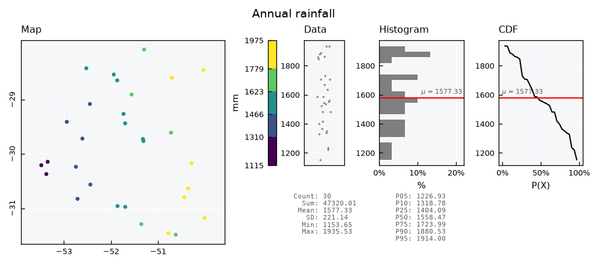
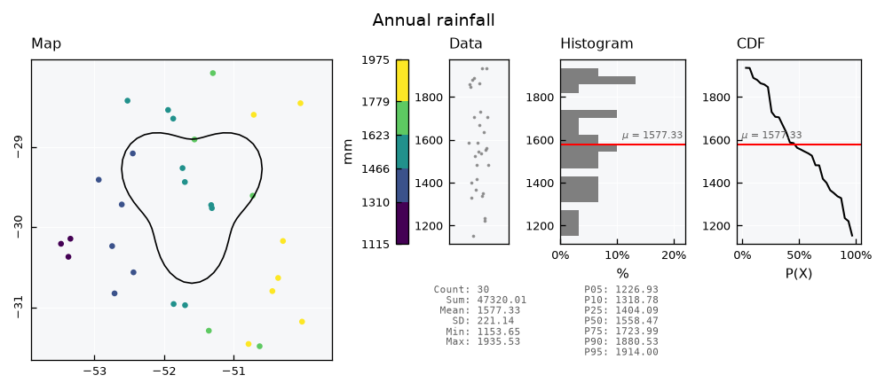
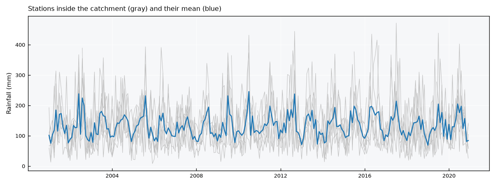

Databases - Station networks#
This tutorial covers SemiSpatialDB, a database whose records carry a feature_id: the key of a place, such as a station, kept outside the database. The example expands the single station of the basics tutorial into a network of 30 weather stations. The geometries of the stations live in their own file, and geopandas joins them back to the records when a map is needed.
See also
Check out the Databases - Basics tutorial first.
Notebook setup#
For users running this tutorial as a Jupyter Notebook, this cell must be executed first:
import sys
import json
from pathlib import Path
import numpy as np
import pandas as pd
import matplotlib.pyplot as plt
import geopandas as gpd
from shapely.geometry import Polygon
# Install `plans` in `google.colab`.
# Use `pip install plans` for other environments.
if "google.colab" in sys.modules:
import os
os.system(f"{sys.executable} -m pip install -q plans")
from plans.databases import SemiSpatialDB
from plans.datasets.analyst import GeoUnivar
# This avoids warnings related to uninstalled fonts
import logging
# Set the matplotlib font manager logger to only show errors (hides warnings)
logging.getLogger('matplotlib.font_manager').setLevel(logging.ERROR)
# define output folder
OUTPUT_DIR = Path("outputs/databases")
OUTPUT_DIR.mkdir(parents=True, exist_ok=True)
print(f"Outputs will be saved to: ./{OUTPUT_DIR}")
Outputs will be saved to: ./outputs/databases
The station network#
Lets place 30 stations at random over a region, in geographic coordinates. Each station has an integer id, which will be its feature_id in the database, and a name:
rng = np.random.default_rng(seed=7) # ensure reproducibility
n_stations = 30
stations = gpd.GeoDataFrame(
data={
"id": np.arange(101, 101 + n_stations),
"name": [f"ST{i}" for i in range(101, 101 + n_stations)],
},
geometry=gpd.points_from_xy(
x=rng.uniform(low=-53.5, high=-50.0, size=n_stations),
y=rng.uniform(low=-31.5, high=-28.0, size=n_stations),
),
crs="EPSG:4674",
)
stations.head()
| id | name | geometry | |
|---|---|---|---|
| 0 | 101 | ST101 | POINT (-51.31217 -29.76094) |
| 1 | 102 | ST102 | POINT (-50.35975 -30.6337) |
| 2 | 103 | ST103 | POINT (-50.7851 -31.45872) |
| 3 | 104 | ST104 | POINT (-52.71177 -30.82659) |
| 4 | 105 | ST105 | POINT (-52.44942 -29.07789) |
The stations are saved to their own GeoPackage. The database never holds them; it only stores their ids:
file_stations = OUTPUT_DIR / "stations.gpkg"
stations.to_file(filename=file_stations, layer="stations", driver="GPKG")
Creating the database#
The setup is the same as for DataBase. The specs describe the datasets of the whole network, not of one station:
def make_spec(name, abstract, variable, statistic):
# one spec of monthly station data
return {
"name": name,
"abstract": abstract,
"method": f"{statistic} of daily readings",
"timestep": "1M",
"extent": "station",
"scale": 1,
"offset": 0,
"start": "2001-01-01",
"end": None,
"variable_name": variable,
"statistic_name": statistic,
"source_name": "INMET",
}
specs = [
make_spec("TAS_MONTHLY", "Monthly mean air temperature (synthetic)", "surface air temperature", "mean"),
make_spec("PPT_MONTHLY", "Monthly rainfall total (synthetic)", "precipitation", "sum"),
]
file_specs = OUTPUT_DIR / "network_specs.json"
file_specs.write_text(json.dumps(specs, indent=2), encoding="utf-8")
db = SemiSpatialDB(name="Network")
file_db = db.new(
config={
"database": {"path": str(OUTPUT_DIR / "network.db")},
"specs": {"path": str(file_specs)},
},
overwrite=True,
)
print(db.inspect_schema(table="records", quiet=True))
[Network]
records (0 rows)
id INTEGER
inserted INTEGER
datetime INTEGER
value REAL
flag_value INTEGER
spec_id INTEGER
feature_id INTEGER
Sample data#
Temperature gets colder to the south, and rainfall grows to the east, so maps will have a pattern to show. Both follow a seasonal cycle. About 3% of the months are missing at random, as in a real network:
dates = pd.date_range(start="2001-01-01", end="2020-12-01", freq="MS")
season = np.cos(2 * np.pi * (dates.month - 1) / 12)
frames_tas, frames_ppt = [], []
for station in stations.itertuples():
south = (-28.0 - station.geometry.y) / 3.5 # 0 north, 1 south
east = (station.geometry.x + 53.5) / 3.5 # 0 west, 1 east
tas = 21 - 4 * south + 5 * season + rng.normal(scale=1, size=len(dates))
mean_ppt = (100 + 60 * east) * (1 - 0.25 * season)
ppt = rng.gamma(shape=4, scale=mean_ppt / 4)
ppt[rng.random(size=len(dates)) < 0.03] = np.nan
frames_tas.append(pd.DataFrame({"datetime": dates, "value": tas, "feature_id": station.id}))
frames_ppt.append(pd.DataFrame({"datetime": dates, "value": ppt, "feature_id": station.id}))
df_tas = pd.concat(frames_tas, ignore_index=True)
df_ppt = pd.concat(frames_ppt, ignore_index=True)
df_ppt.head()
| datetime | value | feature_id | |
|---|---|---|---|
| 0 | 2001-01-01 | 97.241547 | 101 |
| 1 | 2001-02-01 | 130.277754 | 101 |
| 2 | 2001-03-01 | 80.172123 | 101 |
| 3 | 2001-04-01 | 263.717471 | 101 |
| 4 | 2001-05-01 | 146.864231 | 101 |
Inserting records#
Records now need a feature_id column. One call inserts the whole network for a spec. Missing values are dropped, which is the default:
db.insert_records(dataframe=df_tas, spec_name="TAS_MONTHLY", flag=1)
db.insert_records(dataframe=df_ppt, spec_name="PPT_MONTHLY", flag=1)
print(db.inspect_records(head=5, quiet=True))
[Network]
records (14176 rows)
id INTEGER
inserted INTEGER
datetime INTEGER
value REAL
flag_value INTEGER
spec_id INTEGER
feature_id INTEGER
head (5)
id inserted datetime value flag_value spec_id feature_id
1 2026-11-09 18:25 2001-01-01 00:00 23.311831 1 1 101
2 2026-11-09 18:25 2001-02-01 00:00 23.520759 1 1 101
3 2026-11-09 18:25 2001-03-01 00:00 21.024186 1 1 101
4 2026-11-09 18:25 2001-04-01 00:00 19.114762 1 1 101
5 2026-11-09 18:25 2001-05-01 00:00 15.300299 1 1 101
Querying the network#
The feature_id key takes one id or a list of any length. Rows come ordered by spec, station and date:
df = db.query_records(query_dict={"spec_name": "PPT_MONTHLY", "feature_id": [101, 102]})
df[["datetime", "value", "feature_id"]].head()
| datetime | value | feature_id | |
|---|---|---|---|
| 0 | 2001-01-01 00:00:00+00:00 | 97.241547 | 101 |
| 1 | 2001-02-01 00:00:00+00:00 | 130.277754 | 101 |
| 2 | 2001-03-01 00:00:00+00:00 | 80.172123 | 101 |
| 3 | 2001-04-01 00:00:00+00:00 | 263.717471 | 101 |
| 4 | 2001-05-01 00:00:00+00:00 | 146.864231 | 101 |
In wide format, columns are a MultiIndex of spec and station:
wide = db.query_records(query_dict={"spec_name": "TAS_MONTHLY", "wide": True})
wide.iloc[:5, :4]
| spec_name | TAS_MONTHLY | |||
|---|---|---|---|---|
| feature_id | 101 | 102 | 103 | 104 |
| datetime | ||||
| 2001-01-01 00:00:00+00:00 | 23.311831 | 21.181583 | 20.836786 | 21.617143 |
| 2001-02-01 00:00:00+00:00 | 23.520759 | 22.094754 | 22.293410 | 22.677714 |
| 2001-03-01 00:00:00+00:00 | 21.024186 | 18.271938 | 18.863987 | 21.207404 |
| 2001-04-01 00:00:00+00:00 | 19.114762 | 18.361879 | 16.975705 | 19.888797 |
| 2001-05-01 00:00:00+00:00 | 15.300299 | 14.764002 | 15.176272 | 16.560136 |
Joining records to the stations#
Maps need one value per station. Lets compute the mean annual rainfall, using only years with all 12 months, so a missing month does not lower the total:
df = db.query_records(query_dict={"spec_name": "PPT_MONTHLY"})
df["year"] = df["datetime"].dt.year
yearly = df.groupby(["feature_id", "year"])["value"].agg(["sum", "count"])
annual = (
yearly[yearly["count"] == 12]
.groupby("feature_id")["sum"]
.mean()
.rename("ppt_annual")
.reset_index()
)
annual.head()
| feature_id | ppt_annual | |
|---|---|---|
| 0 | 101 | 1587.479636 |
| 1 | 102 | 1858.045009 |
| 2 | 103 | 1845.836445 |
| 3 | 104 | 1328.138769 |
| 4 | 105 | 1399.430228 |
The stations come from their file, and .merge() joins the values by matching id with feature_id:
stations = gpd.read_file(filename=file_stations, layer="stations")
gdf = stations.merge(annual, left_on="id", right_on="feature_id")
gdf.head()
| id | name | geometry | feature_id | ppt_annual | |
|---|---|---|---|---|---|
| 0 | 101 | ST101 | POINT (-51.31217 -29.76094) | 101 | 1587.479636 |
| 1 | 102 | ST102 | POINT (-50.35975 -30.6337) | 102 | 1858.045009 |
| 2 | 103 | ST103 | POINT (-50.7851 -31.45872) | 103 | 1845.836445 |
| 3 | 104 | ST104 | POINT (-52.71177 -30.82659) | 104 | 1328.138769 |
| 4 | 105 | ST105 | POINT (-52.44942 -29.07789) | 105 | 1399.430228 |
Mapping with GeoUnivar#
A GeoUnivar takes the joined GeoDataFrame and the column of values, and shows the map next to the data, the histogram and the CDF:
See also
Check out the Univariate data - Geospatial tutorial for the options of the map.
gv = GeoUnivar(name="Annual rainfall", alias="PPT")
gv.varname = "Mean annual rainfall"
gv.units = "mm"
gv.set_data(input_df=gdf, input_varfield="ppt_annual")
gv.view()

Selecting stations by area#
Spatial questions are answered outside the database too. Lets draw a catchment, find the stations inside it with geopandas, and pass their ids to the query:
angle = np.linspace(start=0, stop=2 * np.pi, num=60, endpoint=False)
radius = 0.9 + 0.2 * np.sin(3 * angle)
catchment = gpd.GeoDataFrame(
data={"name": ["Catchment"]},
geometry=[Polygon(shell=list(zip(-51.6 + radius * np.cos(angle), -29.6 + radius * np.sin(angle))))],
crs="EPSG:4674",
)
inside = stations[stations.within(other=catchment.geometry.iloc[0])]
ids = inside["id"].tolist()
print(f"{len(ids)} stations inside: {ids}")
7 stations inside: [101, 105, 115, 116, 118, 119, 130]
The map shows the catchment with the helper_geometry key:
gv.view_specs["helper_geometry"] = catchment
gv.view()

The query returns the records of those stations only. Their average gives a simple areal rainfall for the catchment:
wide = db.query_records(query_dict={"spec_name": "PPT_MONTHLY", "feature_id": ids, "wide": True})
areal = wide.mean(axis=1)
fig, ax = plt.subplots(figsize=(8, 3))
ax.plot(wide.index, wide.values, color="silver", lw=0.5)
ax.plot(areal.index, areal.values, color="tab:blue", lw=1.2)
ax.set_ylabel("Rainfall (mm)")
ax.set_title("Stations inside the catchment (gray) and their mean (blue)", loc="left")
plt.tight_layout()
plt.show()

db.close()